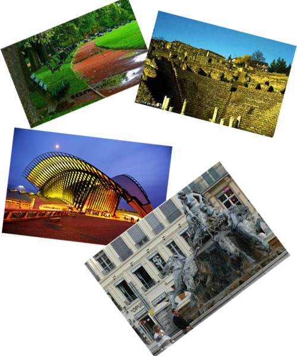

里昂文化
 里昂是一座拥有2000多年的悠久历史的城市[4] ，在15世纪时就已成为世界上最大的丝织品产地之一，17世纪曾一度成为法国的政治、经济和文化中心。而今，它是一座大学城、工业城。在群山环抱中的里昂老城已被联合国教科文组织列入世界文化遗产名录，更为其增添了几分神秘的色彩[29] 。在罗讷河和索恩河的交汇下，里昂呈现出独特的“两水三岸”的格局，其市区根据大致可分为三个旅游地理单元，从西往东依次为：富维耶山、里昂老城和里昂东部。 原为索恩河与罗讷河之间的渔村。公元前 1世纪成为高卢首都,由于地处地中海通西北欧的中继站地位,水上运输方便，为早期发展提供了条件,公元2世纪初就有人口20万，但此后近1000年间地位衰落。11世纪随东方丝绸、香料、珠宝、食品经罗讷－索恩河商路，出现了商业集市。13世纪成为宗教中心。15～16世纪纺织、皮革、印刷、金属加工等工业发展，至18世纪形成工业城市，人口10万。19世纪成为铁路交通和金融中心，丝织业兴盛。以后又逐渐发展化工、机器制造、电机、人造纤维、染料等部门。经济繁荣，人口大增，至第一次世界大战前，人口近50万。20世纪30年代以来，效区扩展迅速，已建立了维勒班、韦尼雪等重要卫星城镇。效区人口从1941年的15万左右，增加到1975年的70万。同时，市区人口略有减少。1969年建立的里昂“城市共同体”，范围更大，连同里昂共有56个城镇。文化之城的里昂被称为“文化之城”。在全欧洲，除了威尼斯，里昂是拥有印刷工人数量最多的城市，在这里的印刷厂里印出了第一本法语书。这里特别值得记住的是法国文艺复兴时期作家、文人主义者弗朗西斯·拉伯雷，他从蒙波利埃大学毕业后成为名医，1532年开始发表作品，他的《巨人传》就是在里昂离他工作的医院不远的住所完成的。同时，里昂还有艺术家和作家踊跃参加的文化沙龙，他们对传播新的文艺思想和理论作出了重要的贡献。里昂有几百幅壁画，有的描写里昂的历史，有的记录城市生活，其中大型的就有40多幅。在十字架—鲁斯街口，有一幅面积为1200平方米的《卡尼》壁画，据说是目前欧洲最大的城市壁画。它描绘了卡尼街区过去的人物和活动场景。索恩河畔一幢7层老式楼房的墙面上，有一幅800平方米的壁画，叫做《里昂人》。壁画描绘的是里昂历史上的著名人物，包括宗教人士、科学家、艺术家等，共有20多位。其他大大小小的壁画，描述的内容还有书店、建筑、商店橱窗等等，这些形形色色的壁画，使得里昂成为了名副其实的“壁画之都” 。
Copyright©2013-2014Hebshufajia.com,All Rights Reserved
冀ICP备05067795号 冀公网安备110402440008号